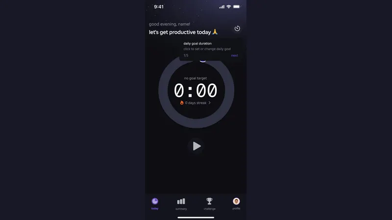
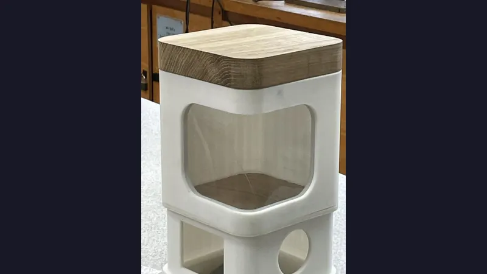
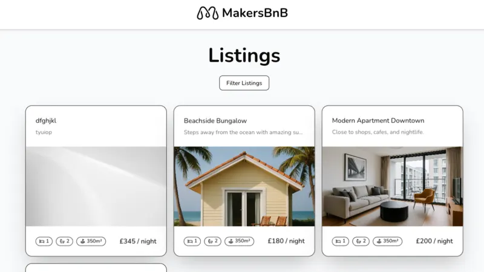
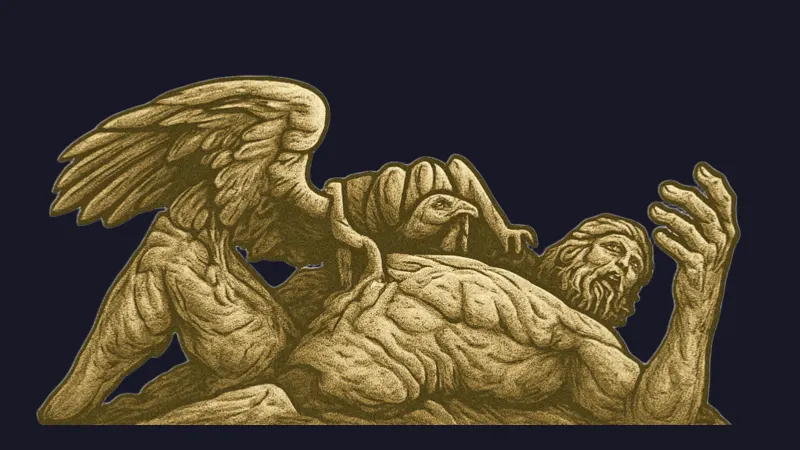
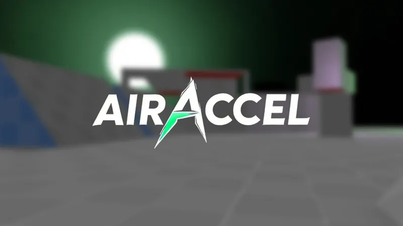
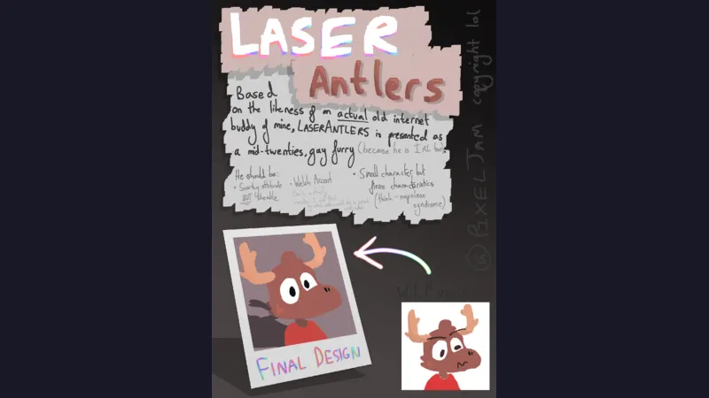
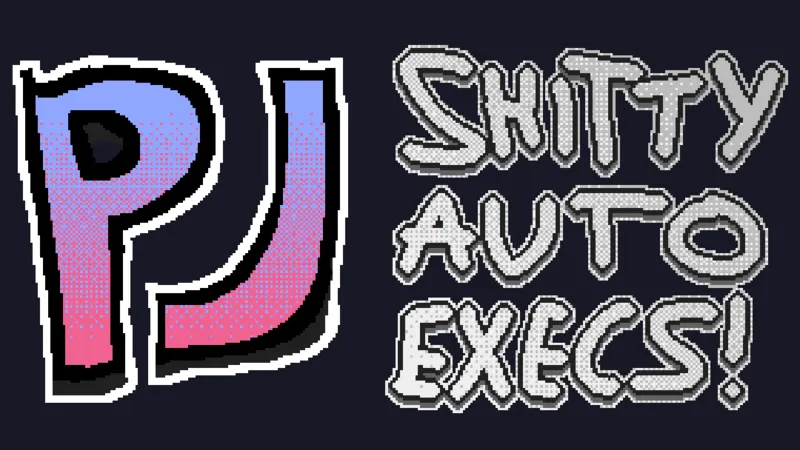

United Kingdom · 19 · software engineer
milo tek
I'm 19, I live in the UK, and I write software for a living and for fun.
Right now that means the Google Search app on mobile, mostly backend and infrastructure work.
Outside of that: Nix, game engines, shaders, and a lot of half-finished side projects.
select19 entries↑↓ to browse
WorkPaid, and the reason I know what I know.
01 google.com, lol Google Search app Backend and infrastructure on the Google Search app for mobile. BackendInfrastructureDeveloper tools currentSystemsThings that run on their own and I have to maintain.
02 nixeljam My NixOS config. Every machine I own, declared once. NixNixOShome-managerHyprland 2026 - now 03 kotlin + kiosk habits A habit tracker that draws itself as a GitHub contribution grid. KotlinSQLiteNix 2026 04 /trashdump/ files.tek.rip A public file dump for me and my friends. Anyone can read it. copypartyCaddyNixOSApps and toolsStuff with users, or at least a UI.
05
Lockyn A study app for GCSE and sixth form students. Unreleased. React NativeTypeScriptFirebaseExpo 2024 - 2025 06
AutoPet feeder An automated pet feeder, designed and built to a neighbour's spec. Raspberry PiJavaScriptMQTT3D printing 07
MakersBnB An Airbnb clone in Flask, built by six people in a week. PythonFlaskPostgreSQLBasecoat UI 2025 08
tittyos A deep learning library in C++. Tensors, autograd, terrible name. C++CMake 2025 09 spring boot Acebook A Facebook clone in Java and Spring Boot. JavaSpring BootThymeleafPostgreSQL 2025 10 swift then RN fastgains A calorie tracker. Swift first, then rewritten in React Native. SwiftSwiftUIReact NativeSupabase 2024 - 2025Games and graphicsEngines, shaders, charts, silly physics.
11
AIRACCEL Bunnyhop and surf, in a browser. TypeScriptWebGL 2026 12 unity + URP neosource Fragsurf ported to Unity 2022.3 and URP, with a working Linux editor. C#UnityURP 2026 13 legacy console shaders Make Minecraft Java look like the Xbox 360 edition. GLSLShadersModCore 2026 14 notITG pack Stepmania modcharts. Lua, GLSL, and a keyboard instead of a dance pad. LuaGLSLnotITG 2025 15
Laser Antlers An accessible 3D platformer, built over six months for my EPQ. GodotC#GDScript 2023 - 2024 16 roblox lua CollisionSounds Roblox parts that sound like what they're made of when they hit things. LuaRoblox 2025BitsSmall, finished, still on the internet.
17
game configs Autoexecs for Valve games. Sensible keybinds, some jokes. cfgPython 2025 - 2026 18 folder in, mp4 out audio video showcase Point it at a folder of sounds, get a captioned video out. Pythonffmpeg 2025 19 minecraft punchdrunk.gg A static site for my Minecraft server. Mostly a wall of gifs. PythonHTML 2025writingall posts
2026-09-05
The new site
Why the old carrd is gone, what replaced it, and how the whole thing is a folder of text files.
read it